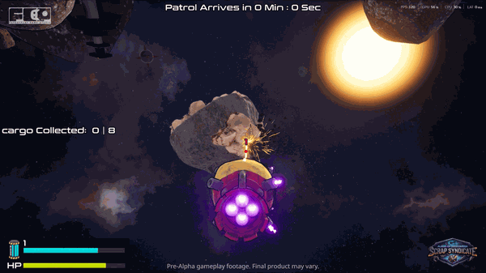
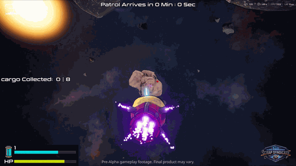

In Development


FatCatPlay Game Studio
View Project
AOA: Space Scrap Smugglers
- Drafted and maintained structured Game Design Documents (GDDs) for a physics-driven space mining simulation, establishing core loops.
- Engineered physics-based tool synergies to simulate smuggling, including a Gravity Beam that forces emergent team communication.
- Created top-down level layouts and structured early graybox blockouts for the Training Spoke to validate spatial metrics.
- Designed textless onboarding sequences utilizing diegetic visual cues to teach spaceship piloting organically.